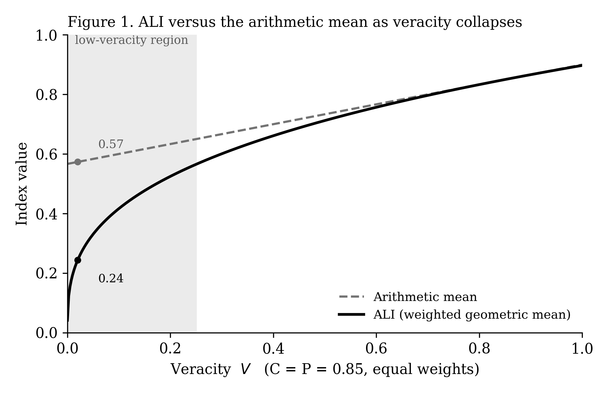

Clearance Is Not Justice
An Anthropometric Turn for Court Performance Measurement in the Age of Algorithmic Congestion
Imran Hafiz · Aux Labs LLC
Plain-Language Summary
Courts grade themselves mostly on speed: how quickly they clear the cases filed with them. By that measure a court can look excellent even when most of the people in it lose automatically, without anyone checking whether the claim against them was fair. In consumer-debt cases, more than seven in ten defendants lose by default — no hearing, no examination of the facts — and fewer than one in ten had a lawyer. The court’s numbers call this success.
Economists ran into a version of this problem long ago. In the 1800s the American economy grew while the average person got physically shorter, because industrial life was harming people even as it produced wealth. Only by measuring human bodies — height — could anyone see it; the economic totals hid it completely.
This paper argues that courts need the same shift: stop measuring only how fast paperwork moves, and start measuring what happens to the people. It proposes two numbers. One scores whether a filing makes a real, checkable claim — built so that a filing full of fabricated AI citations scores near zero no matter how polished it looks. The other measures how many people actually got a real decision on their case instead of losing by default. The first gives courts back time; the second makes sure that time goes to justice rather than to speed. The paper also shows the reform saves money for almost everyone, and argues that a small tax on AI — the same technology now flooding the courts — could pay for it.
Abstract
Generative language models have given self-represented litigants unlimited drafting capacity, and courts are absorbing the cost: by early 2026, roughly one in five federal complaint filings contained text classifiable as AI-generated, and self-represented docket activity per court in the opening months of litigation had risen by nearly two-thirds (Shah and Levy 2026, working paper). The reflexive response is to measure the new burden and reduce it. This paper argues that the reflex is dangerous, because the metrics a court would use — clearance rate and time to disposition (National Center for State Courts 2005) — are the gross domestic product of justice: aggregate throughput measures that are maximized by the pathology they would be asked to solve. We ground the critique in economic history. During the American antebellum period, average stature fell by roughly two inches even as GDP per capita grew — a divergence between material and biological welfare that only anthropometric measurement could detect, later named the “antebellum puzzle” (Fogel et al. 1978; Komlos 1998; Steckel 1995). Courts face their own antebellum puzzle: a docket can post an exemplary clearance rate precisely because more than seventy percent of high-volume civil cases end in default judgment, entered without any consideration of the merits, against defendants represented less than ten percent of the time (Pew Charitable Trusts 2020). We propose an anthropometric turn for court performance measurement — from measuring the apparatus to measuring the realized condition of the people it processes — and operationalize it as a paired instrument. The Adjudicative Legibility Index (ALI) is a weighted geometric composite of a filing’s veracity, completeness, and proportionality whose multiplicative form is provably resistant to gaming, making fabrication non-compensable by polish; from it we derive Recovered Adjudicative Capacity (RAC), the judicial time reclaimed as filings gain legibility. The Merits-Reached Rate is a height-like outcome measure that moves in opposition to clearance under the pathology, preventing the efficiency instrument from producing a faster injustice machine. We situate the intervention as an Ostrom-style monitoring institution installed at the point of entry (Ostrom 1990), and show that its data seed three further public goods.
Keywords: court performance measurement; access to justice; anthropometrics; mechanism design; Goodhart’s law; common-pool resources; legal artificial intelligence.
1. Introduction: The Docket Clears, the People Don’t
Take a busy civil docket — a justice court hearing evictions and consumer-debt claims, the highest-volume and most self-represented corner of the American legal system. By the instruments the profession has agreed to use, it may be an excellent court. Its clearance rate, the ratio of cases disposed to cases filed, sits at or above one hundred percent; it accrues no backlog (National Center for State Courts 2005). Its time to disposition is short. On the two measures that govern court administration, it performs.
Now take a second set of facts about the same docket. More than seventy percent of its debt cases end in default judgment — an automatic ruling for the plaintiff, entered when the defendant does not appear, issued without any examination of whether the right person was sued for the right amount (Pew Charitable Trusts 2020, 2022). Fewer than one in ten of those defendants has a lawyer; nearly every plaintiff does. Where advocates have sampled such cases and read them, they have found procedural defects rubber-stamped and claims never tested against the facts (Human Rights Watch 2016; Pew Charitable Trusts 2022). Between 1998 and 2017, self-represented plaintiffs lost ninety-six percent of the federal cases they brought (Schwartz and Montague 2026). The court that is a model of efficiency is also a machine for un-adjudicated loss.
Both descriptions are true; only one is measured. This is the problem the paper addresses: the metrics by which courts assess themselves record throughput, not justice, and under high volume and low representation the two diverge — the docket clears because the people do not contest. A default is, from the standpoint of clearance rate, an ideal disposition: instantaneous, final, costless. From the standpoint of the person whose wages are about to be garnished without anyone having checked the claim, it is the system’s deepest failure. The dominant metrics cannot tell the two apart, and they score the failure as success.
Generative artificial intelligence made the problem urgent. Since capable language models became available, the share of federal complaint filings containing AI-generated text has risen from near zero to roughly one in five, and self-represented docket activity per court in the first six months of litigation has climbed by an average of sixty-four percent (Shah and Levy 2026). A database maintained at HEC Paris had cataloged more than twelve hundred judicial decisions confronting hallucinated legal authority by spring 2026 — nearly two thousand by the time of writing — fabricated citations that one court, in the founding case of the genre, called an abuse of the adversary system (Mata v. Avianca, Inc., 678 F. Supp. 3d 443 (S.D.N.Y. 2023); Charlotin 2026). The litigants least able to detect these failures are the ones courts have recognized as standing to benefit most from the technology (In re Bryant, No. 25-10147 (Bankr. M.D.N.C. 2025)). A federal judge has called the trend an existential threat to the federal courts (Schiltz, quoted in Schwartz and Montague 2026).
The natural response — measure the new burden, then reduce it — is the trap. A verification-and-reduction program optimized against clearance and disposition time will enter defaults faster and cheaper. To intervene safely, one must first fix the measure. The burden crisis is both a problem in itself and the occasion that exposes a measurement failure the courts have carried for decades.
The paper makes two contributions. The first is diagnostic. Court performance measurement stands where the measurement of national welfare stood before economic historians found that height could reveal what gross national product concealed — that a population could grow richer in aggregate while its bodies told the opposite story (Fogel et al. 1978; Steckel 1995). We propose the analogous move for justice: an anthropometric turn, from measuring the apparatus to measuring the realized condition of the humans who pass through it. Section 2 develops the analogy and extracts from the anthropometric literature five properties that make a welfare metric trustworthy.
The second contribution is constructive: a paired instrument built to those five properties. The Adjudicative Legibility Index (ALI) measures the legibility of what enters the court, using a weighted geometric construction we prove resistant to gaming (Sections 5–6), and yields a recovered-capacity measure a court can act on (Section 7). Against it we set the Merits-Reached Rate, an outcome measure engineered to move opposite to clearance under exactly the conditions where clearance lies (Section 8). The two are meant to be reported together. Measured alone, legibility gains are indistinguishable from a more efficient injustice; paired with a merits measure, they become what the court’s oath already promises. The remainder situates the instrument within Ostrom’s principles for governing a commons (Section 9), distinguishes it from existing access-to-justice technology (Section 10), and specifies a pilot designed to falsify it (Section 11).
This paper is the second field statement of a research program on behavioral infrastructure — the design of the conversion structures through which public-interest institutions turn inputs into outcomes. Its predecessor analyzed the enclosure of cultural commons by algorithmic intermediaries (Hafiz, AXL-WP-01); the pathology named here, algorithmic congestion, is that concept’s sibling. Enclosure fences a commons; congestion floods it. Both are failures of an ungoverned interface between a private optimizer and a public good.
2. The Antebellum Puzzle: When the Aggregate Lies
The antebellum puzzle is the clearest proof on record that an economy can expand while the people inside it are ground down, and that the aggregate measure will not report it.
The discovery came from military muster rolls. Working from recorded heights, economic historians noticed a fact that contradicted the era’s central assumption (Fogel et al. 1978). The decades after 1820 saw unambiguous material expansion, with output per head growing one to one-and-a-half percent a year. Yet American bodies moved the other way. Beginning with the birth cohorts of the 1830s, native-born white men grew shorter, and average stature fell by roughly two inches before recovering late in the century (Margo and Steckel 1983; Komlos 1998; Steckel 1995). Richard Steckel named the pattern, and it was not local: a parallel decline appeared among the industrializing Dutch and elsewhere in Europe (Drukker and Tassenaar 1997). Wealth rose; the population shrank; only one of the two facts appeared in the national accounts.
Height saw what output could not for five reasons, and each is a property gross national product lacks.
It measures an outcome, not throughput. GDP counts activity flowing through the economy — transactions, production, exchange. Height is the realized state of a body after that activity, and its accompanying insults, have settled. A system can generate enormous motion while producing bad results, and only the second kind of measure registers the difference.
It is cumulative and distributed. Adult stature integrates a whole childhood into one number, taken body by body and then averaged rather than assembled from the top. This matters because an average of output and an average of bodies are different objects. During the antebellum decades the height of the elite did not fall; by some measures their net-nutritional advantage widened even as the common man shrank (Sunder 2013). GDP per capita recorded the elite’s gains and missed the median body’s loss.
It is net, not gross. Height records nutrition after the environment takes its cut. Two populations eating identical calories reach different statures if they carry different burdens of disease and labor, because the body spends its intake fighting infection and doing work before it spends it growing (Steckel 1979, 1995). Urbanization, which raised output and disease exposure together, produced a measurable urban height penalty — richer cities, shorter children (Zehetmayer 2013).
It is un-gamed. No one optimizes their own height. It is not an administered target and cannot be juked, and so it reports the population’s condition honestly. This is the property Goodhart’s law predicts any administered metric will lose once it becomes a target (Goodhart 1975; Strathern 1997) — a property height possesses for free and a designed metric must earn.
It is proximate to what we care about. Money is a proxy for command over goods, which is a proxy for the conditions of life. Height collapses much of that chain: a body is one step from the object of concern, not three (Deaton 2007; Case and Paxson 2008).
Together these define a trustworthy welfare metric: it measures outcomes, not throughput; it is distributed across people, not aggregated over output; it is net of the costs the system imposes; it resists gaming; and it sits close to the human condition it represents. The antebellum puzzle is what a society sees when it governs by a metric with none of these properties and mistakes the metric’s optimism for its own welfare. Section 4 shows that court performance measurement occupies the position national-income accounting held before the anthropometric turn. The task is not to abandon measurement but to change what is measured — to build, for the courts, a reading with height’s five virtues.
3. The Courts as a Congested Commons
A courthouse is a commons, and its scarce resource is attention: the finite hours of clerks and judges, rivalrous because every hour spent on one matter is unavailable to the next, yet non-excludable because a court cannot turn litigants away as a firm turns away customers. A resource both subtractable in use and hard to exclude from is a common-pool resource (Ostrom 1990), and such resources fail not by being fenced off but by being flooded.
For most of the institution’s history the flood was held back by cost. Producing a competent filing was slow and hard, which rate-limited filings to roughly the number people would pay to produce. The friction was never designed as governance, but it functioned as governance.
Generative language models dissolved it in under three years. Since capable models became available, the share of self-represented federal filings bearing markers of machine generation rose from near zero at the end of 2022 to roughly one in five by early 2026; self-represented docket activity per court in the first six months rose by an average of sixty-four percent; and the non-prisoner self-represented share of federal filings climbed from a baseline near eleven percent to almost seventeen percent in fiscal 2025 (Shah and Levy 2026). Volume decoupled from the cost of production. The rate-limiter is gone, and nothing was built to replace it.
We name this pathology algorithmic congestion, sibling to the algorithmic enclosure of this program’s earlier work: enclosure fences a commons and excludes its users; congestion floods it and drowns its function. The private optimizer here is the consumer language model, tuned to produce text a user experiences as authoritative — fluent, confident, citation-laden. That objective is nearly the inverse of the court’s. The filing that maximizes a litigant’s sense of having produced something powerful is, with unsettling regularity, the filing that maximizes the burden on the judge who must read it.
The burden is degraded signal, not only length. The HEC Paris database counted more than twelve hundred decisions confronting hallucinated authority by spring 2026, and nearly two thousand by late August (Charlotin 2026). Fabricated authority is not a formatting nuisance but an abuse of the adversary system, since it asks a court to rule on law that was never written (Mata v. Avianca, Inc., 678 F. Supp. 3d 443, 461 (S.D.N.Y. 2023)). It imposes a specific tax: to catch one hallucinated citation, someone must check every citation, and courts have called that verification an enormous waste of judicial resources (Mid Central Operating Engineers Health & Welfare Fund v. HoosierVac LLC, 2025 WL 574234, at *3 (S.D. Ind. 2025)). Those least able to detect the failures are the self-represented, who lack the databases and training to know a plausible citation can be invented (In re Bryant, No. 25-10147 (Bankr. M.D.N.C. 2025); Mitchel v. Stellantis Financial Services, Inc., 2025 WL 2676569 (E.D. Va. 2025)).
The instinct is to reach for the tools of exclusion, and each fails in a predictable place. Sanctions presuppose a party with something to lose; the levers that grip a lawyer, money and licensure, find no purchase on a self-represented litigant who is frequently judgment-proof and never licensed. Detection by stylometry produces false positives, and a false positive against an indigent litigant with a meritorious claim is a denial of justice, not an inconvenience. Bans, as standing orders, are unenforceable against a population that neither reads them nor could comply, and they foreclose the one genuine upside — that the same tools, channeled correctly, could widen access.
The common flaw is the frame. Exclusion cannot govern a commons that must admit everyone. This was Ostrom’s correction to the pessimism of the tragedy-of-the-commons literature (Hardin 1968): commons can be governed by rules that shape behavior at the point of use rather than by fencing users out (Ostrom 1990). The move for the courts follows. One does not filter the flooding input; one changes it at the threshold, converting a polluting filing into a legible one. This is translation, not filtration — the only move available to a commons obligated to admit everyone.
Ostrom’s principles carry a precondition the current institution cannot meet: to govern a commons by shaping behavior at the point of use, the governors must be able to monitor its condition through a low-cost, legible signal of the resource’s health (Ostrom 1990). The courts have such signals. The next section shows they measure the wrong thing, and that under the conditions algorithmic congestion produces, they report the resource as thriving while it fails.
4. Clearance Rate Is the GDP of Justice
Courts converged two decades ago on a shared instrument. The National Center for State Courts’ CourTools defines ten measures, but two govern daily administration: the clearance rate (dispositions over filings) and time to disposition (National Center for State Courts 2005). A clearance rate at or above one hundred percent means a court is keeping pace and growing no backlog; short disposition times mean it is moving its docket. These are the numbers in annual reports, in the evaluation of presiding judges, and before legislatures at budget time.
They are throughput measures, and held against the five properties of Section 2 they fail every one.
They measure throughput, not outcome. Clearance counts dispositions and is indifferent to what they were: a fully litigated judgment on the merits and a default entered because the defendant never appeared count identically.
They are aggregate, not distributed. Clearance is a ratio over the whole docket, and like GDP per capita it dissolves the distribution. It cannot see that outcomes concentrate by representation — that the litigant with a lawyer settles or wins while the one without loses by default — because it averages the represented and the unrepresented into one healthy figure.
They are gross, not net. They count dispositions before the costs the process imposes are subtracted. A fast judgment garnishing the wages of someone sued for a debt they did not owe is a cleared case and a short disposition time — an unblemished contribution to both headline numbers.
They are gameable, not un-gamed. Clearance is an administered target, and Goodhart’s law applies: the cheapest way to raise it is to dispose of cases without contest. A docket managed toward clearance has a structural incentive to make defaulting frictionless and contesting hard, because every uncontested disposition is fast and final.
They are remote, not proximate. A disposition sits at the far end of a long chain from justice. A case can be disposed without being heard, heard without being understood, decided without being decided fairly.
A metric that is throughput-based, aggregate, gross, gameable, and remote is the profile of gross national product before the anthropometric turn. And the courts have their own antebellum puzzle, where the aggregate rises while the human condition falls: the default judgment.
Consider the highest-volume civil matter in the American courts, the consumer-debt suit. Reviewing debt litigation across several states, the Pew Charitable Trusts found that more than seventy percent of these cases end not in trial or settlement but in default judgment — an automatic ruling for the plaintiff, issued without examination of the merits (Pew Charitable Trusts 2020, 2022). Fewer than one in ten of those defendants is represented; nearly every plaintiff is. The pattern is a business model, not an accident of the docket: suits filed in bulk, often in inconvenient venues, by parties who know most defendants will never respond, and who are correct.
Read through the metric, the default judgment is the ideal disposition: instantaneous, final, requiring no hearing and no judicial labor. A court maximizing clearance should, if honest about what the number rewards, prefer defaults to trials. The seventy-percent default rate does not depress the court’s performance figures; it inflates them. The docket clears because the people do not contest, and they do not contest because, disproportionately, they have no lawyer, did not understand the summons, or never learned they had been sued. The aggregate reports excellence composed of the population’s defeat. Clearance does not fail to see the injustice; it scores it as success.
The profession is not wholly blind. CourTools includes, as its first measure, Access and Fairness — but it surveys how court users rate their treatment, a subjective satisfaction instrument, not a measure of whether justice was reached (National Center for State Courts 2005). It asks whether the litigant felt fairly treated, not whether the case was decided on its merits. The instrument to record whether the person got justice is absent from the standard set.
Algorithmic congestion is therefore not only a burden problem. It arrives at an institution whose measurement is already blind to justice and already rewards uncontested disposition, and it hands that institution a reason to optimize harder. A program that measures the new burden and reduces it, assessed against clearance and disposition time, builds a faster machine for entering defaults. Before one can safely give the court back its time, one must give it a second reading — a measure with height’s five virtues that records what clearing the docket does to the people in it.
5. Two Readings: Input Legibility and the Lived Standard of Justice
The corrective points to a single move — a second reading built to the five properties clearance lacks — but there is a trap inside it. The most natural second reading, a measure of the new burden so that it can be reduced, is the disease accelerated.
Clearance rewards uncontested disposition; the cheapest such disposition is the default; and algorithmic congestion hands a default-preferring court a reason to process defaults faster. Build the obvious tool — one that cleans up AI-generated filings, verifies their citations, and hands the judge something legible — and measure it the obvious way, by recovered judicial hours, and the result optimizes the same variable clearance already optimizes: throughput. A burden-reduction program assessed only by recovered capacity makes the entry of defaults cleaner, faster, and cheaper. Measured by efficiency alone, the cure is a better rocket docket.
The instrument therefore needs two halves that measure different things and pull in different directions. The first reads the input: the Adjudicative Legibility Index (ALI), and from it Recovered Adjudicative Capacity (RAC), the judicial time reclaimed as filings become legible. This is the efficiency reading — the number a court acts on and a funder underwrites, and the number that, alone, can be gamed toward speed. RAC is the GDP-side reading of the pair: real, useful, and dangerous by itself.
The second reads the outcome: the Merits-Reached Rate, the share of litigants — and specifically of self-represented litigants — whose cases are decided on their substance rather than lost to default, dismissal-for-defect, or an uninformed settlement. This is the height-side reading, and it has the five properties clearance lacks. It is an outcome, distributed across the vulnerable population, net of the procedural attrition the system imposes, and proximate to justice. It possesses the fifth property, resistance to gaming, through a structural feature: it moves opposite to clearance under exactly the conditions where clearance lies. A court that games speed by making defaults frictionless will watch its Merits-Reached Rate fall as its clearance rate rises. The two numbers diverge at the pathology, as height and GDP diverged in the antebellum decades, and that divergence is the diagnostic signal.
Paired, the two do what neither can alone. RAC gains count as real only when the Merits-Reached Rate holds or improves; recovered capacity purchased by burying more people in defaults registers as the loss it is. The efficiency instrument is bound to the justice instrument, and the institution is held to both halves of its promise at once — speedier outcomes and more justice, which clearance has always let it trade against unobserved.
Beneath the two readings is a single object, the one the title names. Both measure legibility, in the two directions that cross the interface between a person and the court. ALI asks whether the litigant is legible to the court — whether what they file can be read and ruled upon. The outcome reading, and its companion measure of comprehension, asks the reciprocal: whether the court is legible to the litigant — whether the person understood what was asked and what was decided. A default judgment against someone who never grasped the summons is the sharpest failure of the court’s legibility to the human being, and it is invisible to every metric now in use. A commons at an ungoverned interface fails when legibility breaks down in either direction; governing it means restoring legibility both ways.
The two formal sections follow. Section 6 builds ALI and proves it recovers, by design, the resistance to gaming height enjoys by nature. Section 7 derives RAC. Section 8 builds the Merits-Reached Rate and its companions and maps each to the five properties of Section 2.
6. The Adjudicative Legibility Index
Height resists gaming because no one optimizes their stature. An administered court metric enjoys no such protection; by Goodhart’s law it is optimized the moment it is scored (Goodhart 1975; Strathern 1997). The construction below recovers the property by mathematical form, and the recovery is provable.
Definition 6.1 (Component scores). For a filing $i$, define three scores in $[0,1]$:
- Veracity $V_i$: the proportion of cited authorities that are both real and apposite, checked against ground-truth legal databases rather than self-reported. Fabricated or misapplied citations lower $V_i$.
- Completeness $C_i$: the proportion of the legally required elements of the claim or defense that are affirmatively pleaded, scored against a per-cause-of-action rubric.
- Proportionality $P_i$: the share of the filing that is load-bearing rather than extraneous, defined as one minus the ratio of extraneous to total material.
Definition 6.2 (Adjudicative Legibility Index). Fix weights $\alpha, \beta, \gamma > 0$ with $\alpha + \beta + \gamma = 1$. The index is the weighted geometric mean of the components:
$$\mathrm{ALI}_i = V_i^{\alpha}\, C_i^{\beta}\, P_i^{\gamma}.$$
The product rather than the sum is the decision the section turns on, and its justification is formal.
Design requirement (non-substitutability). A legibility aggregation should treat its components as complements, not substitutes: a deficiency in one dimension should not be offset by surplus in another, and a collapse in veracity should not be maskable by polish. Two conditions capture this — that any component at zero forces the index to zero, and that the exchange rate between components worsens without limit as a component approaches zero.
Proposition 6.1. Let $g(V,C,P) = V^{\alpha} C^{\beta} P^{\gamma}$ and $a(V,C,P) = \alpha V + \beta C + \gamma P$ on $[0,1]^3$, with $\alpha,\beta,\gamma > 0$ and $\alpha+\beta+\gamma = 1$. Then:
(i) $g = 0$ whenever $\min(V,C,P) = 0$, while $a = 0$ only if $V = C = P = 0$.
(ii) On any interior level set of $g$, holding $P$ fixed, the rate at which $C$ must rise to offset a fall in $V$ is $\lvert dC/dV\rvert = \alpha C / \beta V$, which tends to $\infty$ as $V \to 0^{+}$. For $a$, the same rate is the constant $\alpha/\beta$.
(iii) $\partial g/\partial V = \alpha\,g/V \to \infty$ as $V \to 0^{+}$ with $C,P$ fixed positive; for $a$, $\partial a/\partial V = \alpha$, constant.
Proof. (i) $g$ is a product of nonnegative factors with positive exponents, so it vanishes if any base is zero; $a$ is a weighted sum with positive weights, so it vanishes only when every term does. (ii) On $g = k > 0$, taking logarithms gives $\alpha \ln V + \beta \ln C + \gamma \ln P = \ln k$; differentiating with $P$ fixed gives $\alpha\,dV/V + \beta\,dC/C = 0$, so $dC/dV = -\alpha C/\beta V$, which diverges as $V \to 0^{+}$. For $a = k$, $\alpha\,dV + \beta\,dC = 0$, so $dC/dV = -\alpha/\beta$. (iii) $\partial_V g = \alpha V^{\alpha-1}C^{\beta}P^{\gamma} = \alpha g/V$, and since $\alpha - 1 < 0$, $g/V \to \infty$ as $V \to 0^{+}$; while $\partial_V a = \alpha$. ∎
The three results are three institutional guarantees. By (i), a filing whose every citation is invented scores zero regardless of completeness or concision. By (ii), as veracity falls toward zero the completeness needed to hold any fixed score rises without bound, so the components behave as complements near the boundary. By (iii), the index is most sensitive to whichever component is most deficient, directing correction toward the worst failure rather than rewarding further improvement of an adequate one. The arithmetic mean supplies none of the three: it treats the components as perfect substitutes at a fixed exchange rate, so a veracity deficit is always purchasable with a fixed surplus of completeness or concision.
The difference is sharpest for the filing a consumer model produces at its most dangerous: fluent, complete in appearance, concise, and wholly fabricated. Table 1 scores four filings under equal weights.
Table 1. ALI versus the arithmetic mean, four filings, equal weights.
| Filing | V | C | P | ALI (geometric) | Arithmetic mean |
|---|---|---|---|---|---|
| Fabricated, polished | ≈0 | 0.90 | 0.90 | 0.09 | 0.60 |
| Half-hallucinated | 0.50 | 0.80 | 0.25 | 0.46 | 0.52 |
| Trimmed for concision | 0.50 | 0.80 | 0.90 | 0.71 | 0.73 |
| Clean, verified | 0.98 | 0.95 | 0.90 | 0.94 | 0.94 |
The arithmetic mean rates the fabricated filing at 0.60, above its midpoint; ALI rates it at 0.09. On the honest filing the two agree. The geometric construction costs nothing on sound filings and collapses only on fabricated ones — the asymmetry an adjudicative setting requires.

, low-veracity region shaded. The curves converge as V → 1 and separate by as much as 0.33 in the shaded region, where the arithmetic mean holds a mostly-fabricated filing near its midpoint and the geometric index does not.]
Using a geometric rather than an arithmetic aggregation to keep one strong dimension from masking a weak one is not novel, and its precedent strengthens the case. The United Nations Development Programme revised the Human Development Index in 2010 for this reason, replacing an arithmetic mean of health, education, and income with a geometric one so a high income score could no longer compensate for a collapsed health score (UNDP 2010; Klugman, Rodríguez, and Choi 2011). ALI applies the same correction and inherits the same guarantee.
Two limits should be stated. First, Proposition 6.1 secures the aggregation against cross-component compensation; it does not certify the measurement of each component. Veracity is externally verifiable and therefore most robust — fortunately, since it is also the dimension the theorem protects most forcefully. Completeness and proportionality depend on rubrics that carry measurement error and require inter-rater reliability testing before deployment. Second, the guarantee concerns compensation across dimensions, not manipulation within one: a filing padded with real but irrelevant citations shifts the burden onto the apposite-ness judgment inside $V$, which the theorem does not police. The instrument is only as sound as its component measurements, and those are an empirical program.
The weights are a governance parameter, not a mathematical one. Proposition 6.1 holds for every strictly positive choice, so the guarantees do not depend on the values; the values encode a jurisdiction’s relative priority among the dimensions, and setting them is a task for the collective-choice body (Section 11). A natural prior over-weights veracity, consistent with the priority courts place on not being misled — but that is a claim to elicit from the bench, not to assert here.
7. Recovered Adjudicative Capacity
ALI scores a filing on a scale a court has no line item for. Judicial administration is denominated in time, and the case for intervention must be made in that currency. RAC translates a shift in the legibility distribution into reclaimed judicial hours — the quantity a presiding judge can defend and a funder can underwrite. It is the efficiency reading of the pair, and should be read as one half of a pair whose other half (Section 8) keeps it honest.
Definition 7.1 (Burden model). For a filing $i$ of case type $t(i)$, let $B_{\min,t}$ be the minimal adjudicative burden — the judge-and-clerk minutes to dispose of a fully legible filing of that type. Model realized burden as $$B_i = B_{\min,t(i)}\bigl[1 + \kappa(1 - \mathrm{ALI}_i)\bigr],$$ where $\kappa \geq 0$ is the burden-amplification coefficient: the factor by which a wholly illegible filing multiplies the minimal burden. At $\mathrm{ALI}_i = 1$ the filing costs the minimum; at $\mathrm{ALI}_i = 0$ it costs $(1+\kappa)$ times the minimum, absorbing the verification, deciphering, and defect-correction labor illegibility imposes.
Definition 7.2 (Recovered Adjudicative Capacity). $$\mathrm{RAC} = \sum_i \bigl(B_i^{\text{before}} - B_i^{\text{after}}\bigr) = \kappa \sum_i B_{\min,t(i)}\bigl(\mathrm{ALI}_i^{\text{after}} - \mathrm{ALI}_i^{\text{before}}\bigr).$$ Recovered capacity is the minimal-burden-weighted sum of legibility gains, scaled by the amplification coefficient. Every hour RAC claims is tied to a measured improvement in a filing’s legibility, not an asserted efficiency.
Estimation. Two inputs require calibration, and neither depends on novel data collection or a scarce specialist. $B_{\min,t}$ is the quantity courts already estimate through weighted-caseload and workload-assessment studies, which assign judge-and-staff minutes to case types (Flango and Ostrom 1996; National Center for State Courts workload-assessment reports). The amplification coefficient $\kappa$ is recovered by regressing observed processing time on minimal burden and illegibility $(1 - \mathrm{ALI})$ over a sample of scored filings; the illegibility slope identifies $\kappa$. Confidence intervals follow from a bootstrap over filings, which propagates the uncertainty in both the ALI scores and the fitted $\kappa$. Where an actuarial hand is available it improves the estimate at the margins — credibility-weighting stabilizes $\kappa$ when pooled across dockets of different sizes, and modeling the burden distribution rather than its mean captures the heavy tail a few catastrophic filings contribute — but these refine a figure a regression already yields.
Worked example. One week on a busy justice-court eviction-and-debt docket: six hundred filings, a minimal burden of eight adjudicative minutes for a legible filing, and $\kappa = 3.5$, so a fully illegible filing costs 4.5 times the minimum. If the intervention lifts mean legibility from 0.42 to 0.72, realized burden falls from roughly 242 to roughly 158 judge-and-clerk hours — a recovery near 84 hours weekly, annualizing to about two full-time equivalents on a single docket. Across a county’s dockets the figure becomes a budget line. The numbers are illustrative; $B_{\min}$, $\kappa$, and the achievable legibility lift are empirical, and no RAC figure should be quoted before calibration in the jurisdiction at issue.
Limits. The linear amplification model is a first approximation; the true relationship may be convex, and the functional form should be tested. There is a selection concern: filings arriving illegible may differ systematically from clean ones in ways correlated with burden. And minimal burden varies within a case type, so $B_{\min,t}$ is itself a distribution collapsed to a working value. A reported RAC should carry its uncertainty rather than present as precise.
RAC alone is a throughput measure and inherits throughput’s vulnerability. Every term rewards moving filings up the legibility scale and processing them faster; nothing distinguishes recovered hours spent hearing cases from recovered hours spent entering defaults. RAC optimized in isolation is the rocket docket of Section 5 with cleaner inputs. This is why the instrument reports RAC only against the Merits-Reached Rate, constructed next.
8. The Merits-Reached Rate and Its Companions
Where ALI reads the input, the second half reads the output — not how a filing arrives, but what the court does to the person who filed it. Its primary measure is the quantity the current apparatus omits: whether the case was decided.
Definition 8.1 (Merits-Reached Rate). For a defined population over a period, the Merits-Reached Rate is the proportion whose cases are resolved by a determination on the substance of the claim or defense, as opposed to default, dismissal for procedural defect, or a settlement entered without informed participation. It is computed on the self-represented population, and its inverse is the procedural stunting rate: the share of cases arrested by the process before reaching their merits. The term is deliberate. Stunting is the anthropometric name for growth impaired by the environment rather than the organism, and a case stunted by procedure is its courthouse analog — a claim with substance it was never allowed to express.
Against the five properties, the Merits-Reached Rate has what clearance lacks. It is an outcome, recording what the disposition was. It is distributed, taken over the vulnerable population, so it registers the concentration of harm the Pew data locates, where representation and merits determination rise and fall together (Pew Charitable Trusts 2020). It is net, the residual after procedural attrition takes its share. It is proximate, since a decision on the merits is much of what justice, procedurally understood, consists of. And it resists gaming through a structural feature.
The divergence property. Let $d$ index a court’s disposition toward frictionless default — the degree to which it lowers the barriers to a judgment against a non-appearing party. Clearance rate is increasing in $d$: every default is a fast, final disposition. The Merits-Reached Rate is decreasing in $d$: every default is a case not decided on its merits. The two measures carry opposite signs with respect to the lever that games throughput, $\partial(\text{clearance})/\partial d > 0$ while $\partial(\text{MRR})/\partial d < 0$. A court manufacturing clearance by easing defaults shows it as a falling Merits-Reached Rate. The measure cannot be gamed by the maneuvers that game clearance, because those maneuvers move it the wrong way; it can be raised only by reaching more merits. The divergence of the two numbers under the default-friction lever is the courthouse instance of the antebellum divergence, and the gap between the readings is the diagnostic signal.
Two companion measures extend the outcome reading.
Definition 8.2 (Durability). For resolved matters, durability is the complement of the recurrence rate: the share of dispositions that hold, measured against the reappearance of the same underlying dispute within a follow-up window — the re-filed debt, the successive eviction of the same tenancy, the breached and re-litigated agreement. Durability is the most cumulative measure, integrating a resolution’s consequences over time, and the closest to the ultimate object of concern: a dispute that stays resolved is a fragment of durable social peace, and one that recurs is the system failing at what courts exist to do. A high clearance rate composed of resolutions that promptly recur is throughput without settlement, and only a durability measure sees the difference.
Definition 8.3 (Comprehension). For litigants, comprehension is the degree to which the person understood the proceeding — what was asked, what was decided, and why. It is the reciprocal of ALI: where ALI asks whether the litigant is legible to the court, comprehension asks whether the court is legible to the litigant. A default judgment against someone who never understood the summons is the deepest failure of the court’s legibility to the human being, and it is invisible to every metric in use. Procedural-justice research establishes that whether people experience a process as fair, and comply with its outcomes, turns heavily on whether they understood and were understood within it (Tyler 2006); comprehension is the measurable substrate of that finding.
Reporting. The three measures are reported as a panel, not collapsed into one figure. Aggregating them would reintroduce the substitutability Section 6 was built to exclude, letting a strong durability score mask a collapsed comprehension score, and the three record distinct failures a decision-maker needs to see separately: a case can be reached and not hold, held and not understood. Where a single justice-side figure is required for a dashboard, the geometric construction of Section 6 applies unchanged and for the same reason.
Measurement and limits. Each measure carries an empirical burden. The Merits-Reached Rate requires classifying dispositions against a rubric, and the classification is not always clean — an informed settlement and an uninformed one can leave the same docket entry, and distinguishing them is the rubric’s hardest task. Durability requires record linkage and a follow-up window whose length is a judgment. Comprehension cannot be read from the record and must be elicited, which makes it intrusive and costly, and it is therefore sampled rather than a census. None of these is disqualifying, but a responsible deployment states its measurement error rather than presenting the panel as more precise than its inputs allow.
With the Merits-Reached panel set beside Recovered Adjudicative Capacity, the anthropometric turn is operationalized. The court holds two readings that measure different things and move differently: efficiency in recovered hours, and the lived standard of justice in cases decided, resolutions that hold, and people who understood. Reported together they hold the institution to both halves of its promise and make visible — and refuse — the trade between speed and justice that clearance has always permitted it to make unobserved.
9. The Economics of Legibility
The instrument measures the harm clearance-based administration cannot see. This section prices it, in three parts: the status quo imposes large costs it does not record; correcting it is Pareto-improving across parties who regard one another as adversaries; and the party that should finance the correction is the one generating the externality. The framing is game-theoretic, because the failure is a failure of a game and the remedy is a change to its rules.
9.1 The game beneath the crisis. The flooded commons of Section 3 is a congestion game (Rosenthal 1973). Each litigant who files more, longer, and unverified imposes a cost on every other user and on the court; each does so rationally, because the private cost of filing has fallen to near zero while the social cost has not. The equilibrium is Pareto-inferior: every party would be better off under a rule constraining the collective behavior, yet none can improve matters alone. This is the structure mechanism design exists to address — the design of rules under which self-interested behavior yields collectively good outcomes (Hurwicz 1973; Maskin 1999; Myerson 1981). The intervention operates on the game in two places: at the point of entry, the legibility layer lowers the externality each filing imposes; at the point of generation, a corrective levy (Section 9.5) makes the party producing the externality internalize its cost. Together they convert a congestion game into a coordination game, and the metric makes the conversion governable, since a mechanism over a common-pool resource requires an observable signal of the resource’s condition (Ostrom 1990).
9.2 The costs the status quo does not price. Four costs are borne and recorded in none of the current metrics.
The first is judicial time. RAC measures it in hours; converting them at the fully loaded cost of judicial and staff time — the figures courts already assign through workload studies — yields the direct fiscal cost of illegibility, a material budget line no current measure attributes to filing illegibility at all.
The second, larger, is the downstream cost of erroneous disposition. When a case is resolved against a party without reaching its merits, and the resolution is wrong, the error does not stop at the courthouse. The most rigorous causal evidence available, exploiting the random assignment of eviction cases to judges, finds that an eviction order raises the probability of emergency-shelter use by several percentage points — a more than threefold increase relative to comparable non-evicted tenants — and causally reduces earnings, raises job loss, and impairs credit access (Collinson et al. 2024; Desmond 2016). Each channel carries a public cost absorbed by shelter systems, emergency medicine, and safety-net spending. A default judgment against a tenant with a valid defense who never appeared is a public expense incurred to produce a private injustice. With more than seventy percent of high-volume civil cases resolving by default (Pew Charitable Trusts 2020) and serial filing against non-appearing defendants a documented business model (Garboden and Rosen 2019), the erroneous subset is not marginal.
The third is the justice gap. Low-income Americans receive no or inadequate help for ninety-two percent of the civil legal problems that substantially affect them, up from eighty-six percent in 2017; seventy-four percent experience at least one such problem a year, and they seek help for only one in four, with cost the most-cited barrier (Legal Services Corporation 2022). The unrepresented do not vanish; they enter alone, and clearance processes their defeats as dispositions.
The fourth is the cost this paper’s occasion newly creates, and the one no party has yet priced: the cost of algorithmic congestion to the litigants who currently benefit from the system’s dysfunction.
9.3 The distribution of savings, including to the adversary. It is natural to assume high-volume corporate litigants — the debt buyers and mass filers who win under a default-heavy regime — oppose a reform that reaches the merits more often. The assumption is myopic. Corporate repeat players priced the old dysfunction, which favored them: uncontested defaults were fast, final, and cheap. They have not priced the new externality, because it is new. Algorithmic congestion degrades the commons for every user. As AI-generated filings flood intake, a legitimate corporate litigant’s own cases slow, judicial attention grows scarcer and costlier, and the legitimacy of mass-default adjudication comes under appellate, regulatory, and public strain. A default judgment obtained from a congested, discredited court is a more fragile asset than one from a functioning one.
The distinction the status quo conflates is between two corporate interests. The interest in an expedient and legitimate court is real, economically valuable, and served by the reform. The interest in an illegitimate default windfall — winning uncontested judgments against defendants who never appeared and might have prevailed — is a rent, not a cost, and its removal is not a loss the reform must weigh. Once separated, the reform is Pareto-improving across the legitimate interests of all parties: individuals avoid wrongful and cascading loss; governments recover judicial capacity and reduce downstream spending; corporate litigants gain a faster, more reliable, more defensible forum. That this improvement is currently invisible — that the congestion cost to corporate litigants is unmeasured — restates the thesis rather than weakening it: the cost is unpriced because the instruments to price it do not exist, and the instrument proposed here would render it visible for the first time.
9.4 The training dividend. The human-review layer is also a positive externality. Senior law students, reviewing flagged filings for merit and completeness under supervision, receive the practice-ready experience legal education is faulted for lacking, and supply the quality layer at a fraction of its market cost. Above them, a tier of retired or sitting judges handles the edge cases and discretionary judgments students cannot, raising the legibility of hard cases, lending the review layer judicial legitimacy, and offering meaningful flexible work to jurists who wish to remain in practice. The nested structure is itself an Ostrom design, and it converts a compliance expense into a training institution whose graduates and engaged senior jurists benefit the whole system.
9.5 Financing: the polluter funds the remediation. Court legibility is a public good in the strict sense (Samuelson 1954): non-excludable and non-rival in its benefit to the fair functioning of the courts. Public goods are undersupplied by voluntary contribution, because each beneficiary understates its benefit and free-rides. The efficient remedy for a good whose undersupply is caused by a negative externality is to make the externality’s source internalize the cost (Pigou 1920; Baumol 1972).
The source is identifiable. Algorithmic congestion is generated by AI inference — the same inference that produces the filings flooding the courts. The matching Pigouvian instrument is a usage-based levy on that inference at the point of sale: a token tax, a de minimis surcharge on model usage, which recent public-finance scholarship identifies as economically sound and administrable because it falls on consumption of AI services rather than the ownership of AI capital, and so does not discourage the underlying investment (Korinek and Lockwood 2026; Irwin, Wu, and Barez 2026; Falk and Tsoukalas 2026; Abbott and Bogenschneider 2018). The concern that such a levy would chill AI development is not borne out by the analogous evidence: robot density is empirically positively associated with high corporate tax rates (Bogenschneider 2022).
The arithmetic is decisive. Worldwide AI spending is forecast at $2.59 trillion in 2026, with spending on AI models alone near $32.6 billion and growing at roughly one hundred ten percent annually (Gartner 2026). The cost of court-legibility infrastructure — the tool, the review layer, the supervising judges — is measured in low millions per jurisdiction. A surcharge far below any threshold that could affect AI adoption would fund the national apparatus many times over, from the precise activity producing the burden. This is the polluter-pays principle applied to a novel pollutant: the levy on AI inference funds the legibility layer that AI inference necessitates, and funds the student and judicial review tiers that make it just. It is not a general tax on technology but a corrective price on a specific externality, earmarked to its remediation.
The mechanism is now whole: a congestion game in which unpriced AI inference floods a public commons becomes, through a levy that prices the inference and a legibility layer that governs the commons, a coordination game in which the generator of the harm funds its cure. The paper opened by naming the problem an ungoverned externality on a common-pool resource. This is that externality, priced.
10. Position Relative to Prior Work
The contribution sits at the intersection of four literatures, and is best understood by what it takes from each and supplies that each lacks.
The measurement of well-being beyond aggregates. The method belongs to a tradition older than its subject. The recognition that a single aggregate of throughput can conceal a decline in the realized human condition became, after the anthropometric turn, a general program. The Commission on the Measurement of Economic Performance and Social Progress argued that reliance on GDP had obscured well-being and urged a shift toward distributed, outcome-oriented measures (Stiglitz, Sen, and Fitoussi 2009); the capability approach reframed development as the expansion of what people are substantively able to do and be (Sen 1999); and the Human Development Index operationalized the shift with the geometric aggregation this instrument reuses. This paper extends that program to a domain it has not reached: adjudication has its own GDP problem, and the anthropometric turn is as available to the courts as to the national accounts.
The existing measurement of justice. Access to justice is already measured, seriously. The World Justice Project has published its Rule of Law Index annually since 2008, aggregating expert assessments and household surveys across more than 140 countries into a hierarchy of over five hundred variables, with civil justice among its factors; its Global Legal Needs Survey has captured the legal problems of more than 100,000 people across a hundred-odd jurisdictions (World Justice Project 2024). The Hague Institute for Innovation of Law runs Justice Needs and Satisfaction surveys; the OECD and the Pathfinders Task Force on Justice have built people-centered indicator frameworks tied to Sustainable Development Goal target 16.3 (OECD 2023; Pathfinders Task Force on Justice 2019). This paper builds in that spirit, but these instruments share a level and method that leave a gap. They are national and comparative, built from surveys and expert perception, and they produce a scorecard — a country’s rank, the size of its justice gap. They cannot be computed at the docket, from the record, for a particular court, in a form it could act on this quarter. The field acknowledges the difficulty candidly: producing even a single civil-justice indicator is recognized as unsolved, because no widely accepted measure yet exists (World Justice Project 2019). ALI and the Merits-Reached Rate are the operational micro-layer that architecture lacks — computed at the level of the filing and the case, from what the court processes rather than from a survey of the population, and designed to drive a court’s governance rather than a nation’s report card. They stand to the Rule of Law Index as a clinical chart stands to a national health survey: not a rival, but the reading beneath it. The existing measurement community is therefore the instrument’s natural home for validation and adoption.
Court performance measurement. Within the courts, CourTools reigns, and Section 4 examined its clearance and disposition-time measures. CourTools is not blind to fairness — its first measure surveys users on whether they felt fairly treated — but a subjective satisfaction survey is not an outcome measure and cannot register whether a case was decided on its merits. This paper supplies the outcome measure the standard set omits and pairs it with an input measure the set never contemplated, because the input pathology did not exist when the standard was written.
The access-to-justice technology field. The most immediate neighbors are the tools built to help self-represented litigants directly: document-assembly platforms and their open-source infrastructure, law-school clinics building guided court-form interviews, and legal-aid workflow systems that triage and route. The field’s most careful diagnostician has named its central failure: teams across the country building the same things in parallel, solving the same problems independently, making the same mistakes in isolation — each wave of innovation beginning in fragmented local builds, duplicated effort, and incompatible systems that cannot be transplanted between organizations (Hagan 2026; on the need for shared human-centred standards for legal help AI, Hagan 2024). This paper is not another entry in that field. It contributes the two things the field’s own diagnosis says it lacks: a shared, gaming-resistant measurement standard, and the interoperability layer around which non-transplantable tools could coordinate.
AI in the courts. The veracity component sits atop an emerging literature on legal hallucination and its detection: models hallucinate on more than half of case-law questions (Dahl et al. 2024), databases catalog the resulting decisions in the thousands (Charlotin 2026), and researchers have begun building automated citation-verification benchmarks (Liu, Stammbach, and Henderson 2026). This paper folds detection into governance. Citation verification here is not an end in itself but the externally-grounded floor of the veracity component — the point at which a detection capability becomes a measurement, and a measurement becomes the monitoring mechanism of a governed commons.
The contribution, stated plainly. The novelty is not a new tool, survey, or detection method, each of which exists. It is, first, the reframe: that the courts are a congested common-pool resource measured by the gross domestic product of justice, and that algorithmic congestion makes the measurement failure urgent rather than latent. It is, second, a paired, record-based, gaming-resistant operational instrument — an input reading of legibility and an outcome reading of merits reached — built to the five properties the beyond-GDP tradition established. And it is, third, the standard and interoperability layer the access-to-justice technology field has been unable to supply for itself. The instrument belongs within the people-centered-justice and beyond-GDP traditions, and is the court-level operational layer those traditions have lacked.
11. Implementation and Validation
A measurement instrument earns its claims only in deployment, and a deployment earns trust only if designed to fail visibly.
11.1 Where to deploy. The instrument should be proved where the pathology is densest. High-volume civil dockets handling eviction and consumer debt are the natural first site: they carry the highest concentration of self-represented litigants and the highest default rates, and therefore the largest merits-reached deficit; their case types are standardized enough to support the per-cause-of-action rubrics Completeness requires; and they are time-sensitive enough that recovered capacity and averted erroneous dispositions have immediate, measurable consequences.
11.2 The deployment architecture. Three components install at the point of entry in the nested structure Ostrom’s principles prescribe (Ostrom 1990). The first is the litigant-facing legibility layer: a tool, available to all self-represented parties through a neutral host such as a court self-help center or legal-aid organization, that assembles filings from approved templates, verifies every cited authority before submission, and produces a structured one-page summary of the relief sought. It does not advise; it renders legible. The second is the human-review tier, itself nested: supervised senior law students review flagged filings for merit and completeness — never strategy — and retired or sitting judges above them resolve the edge cases and discretionary questions. This supplies the discretion automation cannot exercise, the judicial legitimacy the review requires, and the training dividend of Section 9.4. The tier carries one non-negotiable constraint — a conflict-of-interest wall, because a screen that evaluates a potential client’s matter can create a conflict barring the reviewing organization from later representing that party’s adversary. The third component is instrumentation, present from the first filing: ALI, RAC, and the Merits-Reached Rate computed on every matter, so the deployment generates its own validation evidence and the baseline is established before any intervention can contaminate it.
11.3 Calibration. $B_{\min,t}$ is drawn from the workload studies courts already conduct. $\kappa$ is identified by the regression of Section 7. The ALI rubrics — particularly Completeness and Proportionality, which depend on judgment rather than external verification — require inter-rater reliability testing until independent scorers agree, because the aggregation theorem secures the index against cross-component gaming but not against unreliable measurement of a single component. The weights are set by the collective-choice governance body and elicited from the bench, not assumed.
11.4 Validation, and the conditions of failure. The cleanest evaluation exploits staggered adoption. As dockets install the legibility layer at different times, their trajectories on the full panel — hallucinated-citation rate, clearance, ALI, RAC, and Merits-Reached — can be compared against not-yet-adopting dockets in a difference-in-differences design robust to the timing variation (Callaway and Sant’Anna 2021). Where adoption can be randomized, or the random assignment of cases to judges leveraged as in the eviction literature (Collinson et al. 2024), the causal effect on merits reached and downstream outcomes can be identified directly, including through linkage to the administrative records — shelter entry, earnings, credit — that measure whether averted erroneous dispositions reduce downstream harm.
The claims fail under stated conditions:
- If deployment raises RAC while the Merits-Reached Rate falls, the instrument has produced a faster injustice machine and has failed on its own terms, whatever the efficiency number shows. This is the central failure the paired design exists to expose, and the evaluation must be powered to detect it.
- If the hallucinated-citation rate does not decline after the verification layer is installed, the Veracity component is not functioning as claimed.
- If independent scorers cannot agree on the Completeness and Proportionality rubrics, the index is not measurable in the field, whatever its formal properties.
- If filers or courts move the index without moving the reality it measures, the gaming-resistance secured in theory has not survived deployment, and the construction requires revision.
A deployment that cannot fail these tests validates nothing. The instrument is a falsifiable claim, and its first installation should be built to falsify it if it is false.
11.5 Governance and neutrality. The standard is governed by a collective-choice body — judges, clerks, legal-aid representatives, and academics — that sets the rubrics and weights and holds them, per Ostrom’s principle, as a matter co-determined by the resource’s users (Ostrom 1990). Three constraints are load-bearing. The methodology is published and applied uniformly, never tuned to any party the instrument scores. The neutral intake-and-measurement function is held separately from any accountability or reporting function that might expose one side of the cases before the court, because a court cannot sponsor advocacy against its own litigants. And the litigant-facing tool is strictly additive — an on-ramp available to all self-represented parties, never a required gate — so it cannot become a barrier to the people it serves. The first constraint protects credibility, the second neutrality, the third equity.
11.6 Scaling. The path is nested: a single instrumented docket establishes the baseline and calibration; a jurisdiction adopts the validated standard across its dockets; and the standard, built for transplantation rather than as a one-off, propagates to other jurisdictions as a shared protocol. At each level the same paired reading governs, and at each level the instrument serves four public goods — an unburdened court, a trained bar, a population that reaches the merits of its cases, and a public record legible enough to sustain the accountability a functioning justice system requires. Each good has a community that benefits from it, and the instrument’s breadth lets a single intervention answer to all four.
12. Conclusion: Measuring the Body, Not the Throughput
The economic historians who found the antebellum puzzle were not seeking a new theory of welfare. They were reading heights on old muster rolls, and the numbers refused to agree with the national accounts: a country growing richer was raising shorter children, and no aggregate of production could see it. The lesson, which took the discipline decades to absorb, was that the trusted measure answered a different question than the one that mattered. Gross domestic product answered how much moves through the economy; height answered what the economy does to the people in it. When the two diverged, only the second measure could be trusted.
The courts stand where the national accounts stood before that lesson. Clearance rate and time to disposition answer how much moves through the docket, and answer it well. They cannot answer what the docket does to the people in it, and under high volume and low representation the two questions diverge as sharply as height and output did. A court can post an exemplary clearance rate built entirely of defaults, entered against people who never appeared, in cases never tested against their facts. The metric reads that court as excellent; the people in it would not.
Generative artificial intelligence did not create this failure. It made it urgent, dissolving the friction that once rate-limited filings and flooding a commons whose metrics were already blind to justice. The instinct to measure the new burden and reduce it, left uncorrected, would optimize the old failure faster. The response must begin one level earlier, by fixing what the courts measure — and the fix is available, because the anthropometric turn that rescued the measurement of national welfare is as available to justice.
That turn requires two readings rather than one: whether the litigant is legible to the court, and whether the court reached the substance of the person’s case. The first, made resistant to gaming by its form, gives the court back time. The second, made to move against clearance under exactly the conditions where clearance lies, ensures the recovered time is spent on justice rather than speed. Reported together, they hold the institution to both halves of a promise it has long been able to trade against unobserved. Measuring the body instead of the throughput does not mean caring less about efficiency; it means refusing to count efficiency as justice when it is not.
The instrument offered here is a proposal, not a finding. Its components must be calibrated, its rubrics tested for reliability, and its central claim — that a court can recover capacity without sacrificing merits, and that the two can be measured at once — subjected to a deployment designed to falsify it. Height took decades to become a trusted reading of human welfare, and earned that trust by being tested against the record until it could not be dismissed. A measure of what the courts do to the people who pass through them deserves the same scrutiny, and would repay it. The bodies passing through the civil courts are, for now, uncounted. They need not stay that way.
Disclosure
The author has a prospective commercial interest in the development, certification, and measurement infrastructure that adoption of this instrument would require, and discloses it here in full. The methodology is published openly, and its authorship and priority are asserted as a matter of public record. The governance design proposed in Section 11.5 — an independent, collective-choice methodology body, a uniformly applied and un-tuneable score, and a separation of the neutral measurement function from any commercial or advocacy function — is intended precisely to insulate the standard from that interest. The neutrality of the measure is the condition of its value; the author’s interest is served only by a standard that remains credibly independent of him.
Acknowledgments
[To be completed: reviewers, the actuarial calibration collaborator, and institutional partners, once engaged.]
Cases Cited
- In re Bryant, No. 25-10147 (Bankr. M.D.N.C. 2025).
- Mata v. Avianca, Inc., 678 F. Supp. 3d 443 (S.D.N.Y. 2023).
- Mid Central Operating Engineers Health & Welfare Fund v. HoosierVac LLC, 2025 WL 574234 (S.D. Ind. 2025).
- Mitchel v. Stellantis Financial Services, Inc., 2025 WL 2676569 (E.D. Va. 2025).
References
- Abbott, Ryan, and Bret Bogenschneider. 2018. “Should Robots Pay Taxes? Tax Policy in the Age of Automation.” Harvard Law & Policy Review 12: 145–175.
- Baumol, William J. 1972. “On Taxation and the Control of Externalities.” American Economic Review 62 (3): 307–322.
- Bogenschneider, Bret N. 2022. “Empirical Evidence on Robot Taxation: Literature Review and Technical Analysis.” American University Business Law Review 11 (1).
- Callaway, Brantly, and Pedro H. C. Sant’Anna. 2021. “Difference-in-Differences with Multiple Time Periods.” Journal of Econometrics 225 (2): 200–230.
- Case, Anne, and Christina Paxson. 2008. “Stature and Status: Height, Ability, and Labor Market Outcomes.” Journal of Political Economy 116 (3): 499–532.
- Charlotin, Damien. 2026. AI Hallucination Cases Database. https://www.damiencharlotin.com/hallucinations/ (living database; accessed August 30, 2026, at 1,983 cataloged decisions).
- Collinson, Robert, John Eric Humphries, Nicholas Mader, Davin Reed, Daniel Tannenbaum, and Winnie van Dijk. 2024. “Eviction and Poverty in American Cities.” Quarterly Journal of Economics 139 (1): 57–120.
- Dahl, Matthew, Varun Magesh, Mirac Suzgun, and Daniel E. Ho. 2024. “Large Legal Fictions: Profiling Legal Hallucinations in Large Language Models.” Journal of Legal Analysis 16 (1): 64–93.
- Deaton, Angus. 2007. “Height, Health, and Development.” Proceedings of the National Academy of Sciences 104 (33): 13232–13237.
- Desmond, Matthew. 2016. Evicted: Poverty and Profit in the American City. New York: Crown.
- Drukker, J. W., and Vincent Tassenaar. 1997. “Paradoxes of Modernization and Material Well-Being in the Netherlands during the Nineteenth Century.” In Health and Welfare during Industrialization, ed. Richard H. Steckel and Roderick Floud, 331–378. Chicago: University of Chicago Press.
- Falk, Brett Hemenway, and Gerry Tsoukalas. 2026. “The AI Layoff Trap.” arXiv:2603.20617.
- Flango, Victor E., and Brian J. Ostrom. 1996. Assessing the Need for Judges and Court Support Staff. Williamsburg, VA: National Center for State Courts.
- Fogel, Robert W., Stanley L. Engerman, James Trussell, Roderick Floud, Clayne L. Pope, and Larry T. Wimmer. 1978. “The Economics of Mortality in North America, 1650–1910: A Description of a Research Project.” Historical Methods 11 (2): 75–108.
- Garboden, Philip M. E., and Eva Rosen. 2019. “Serial Filing: How Landlords Use the Threat of Eviction.” City & Community 18 (2): 638–661.
- Gartner. 2026. “Gartner Forecasts Worldwide AI Spending to Grow 47% in 2026.” Press release, May 19.
- Goodhart, Charles A. E. 1975. “Problems of Monetary Management: The U.K. Experience.” In Papers in Monetary Economics, vol. 1. Sydney: Reserve Bank of Australia.
- Hafiz, Imran. 2026. Algorithmic Enclosure: The Rise and Collapse of a Cultural Commons (VICE Media, 1994–2023). Aux Labs Working Paper AXL-WP-01.
- Hagan, Margaret. 2024. “Towards Human-Centred Standards for Legal Help AI.” Philosophical Transactions of the Royal Society A 382: 20230157.
- Hagan, Margaret. 2026. “The Legal Help Commons: Shared Infrastructure for the AI Era of Access to Justice.” Legal Design and Innovation (Medium), March 11.
- Hardin, Garrett. 1968. “The Tragedy of the Commons.” Science 162 (3859): 1243–1248.
- Human Rights Watch. 2016. Rubber Stamp Justice: US Courts, Debt Buying Corporations, and the Poor. New York: HRW, January 21.
- Hurwicz, Leonid. 1973. “The Design of Mechanisms for Resource Allocation.” American Economic Review 63 (2): 1–30.
- Irwin, Lucas, Tung-Yu Wu, and Fazl Barez. 2026. “Position: Token Taxes Can Mitigate AI’s Economic Risks.” arXiv:2603.04555.
- Klugman, Jeni, Francisco Rodríguez, and Hyung-Jin Choi. 2011. “The HDI 2010: New Controversies, Old Critiques.” Journal of Economic Inequality 9 (2): 249–288.
- Komlos, John. 1998. “Shrinking in a Growing Economy? The Mystery of Physical Stature during the Industrial Revolution.” Journal of Economic History 58 (3): 779–802.
- Korinek, Anton, and Joseph E. Stiglitz. 2018. “Artificial Intelligence and Its Implications for Income Distribution and Unemployment.” In The Economics of Artificial Intelligence: An Agenda, 349–390. Chicago: University of Chicago Press.
- Korinek, Anton, and Lee M. Lockwood. 2026. “Public Finance in the Age of AI: A Primer.” NBER Working Paper 34873.
- Legal Services Corporation. 2022. The Justice Gap: The Unmet Civil Legal Needs of Low-Income Americans. Prepared by Mary C. Slosar. Washington, DC: LSC.
- Liu, Patty, Dominik Stammbach, and Peter Henderson. 2026. “Who Checks the Citations? Benchmarking Legal Hallucination Detection.” arXiv:2606.21155.
- Margo, Robert A., and Richard H. Steckel. 1983. “Heights of Native-Born Whites during the Antebellum Period.” Journal of Economic History 43 (1): 167–174.
- Maskin, Eric S. 1999. “Nash Equilibrium and Welfare Optimality.” Review of Economic Studies 66 (1): 23–38.
- Myerson, Roger B. 1981. “Optimal Auction Design.” Mathematics of Operations Research 6 (1): 58–73.
- National Center for State Courts. 2005. CourTools: Trial Court Performance Measures. Williamsburg, VA: NCSC.
- OECD. 2023. Recommendation of the Council on Access to Justice and People-Centred Justice Systems. OECD/LEGAL/0498. Paris: OECD.
- Ostrom, Elinor. 1990. Governing the Commons: The Evolution of Institutions for Collective Action. Cambridge: Cambridge University Press.
- Pathfinders for Peaceful, Just and Inclusive Societies, Task Force on Justice. 2019. Justice for All. New York: NYU Center on International Cooperation.
- Pew Charitable Trusts. 2020. How Debt Collectors Are Transforming the Business of State Courts. Philadelphia: Pew.
- Pew Charitable Trusts. 2022. How Debt Collection Works in Philadelphia’s Municipal Court. Philadelphia: Pew, October 26.
- Pigou, A. C. 1920. The Economics of Welfare. London: Macmillan.
- Rosenthal, Robert W. 1973. “A Class of Games Possessing Pure-Strategy Nash Equilibria.” International Journal of Game Theory 2 (1): 65–67.
- Samuelson, Paul A. 1954. “The Pure Theory of Public Expenditure.” Review of Economics and Statistics 36 (4): 387–389.
- Schwartz, Mattathias, and Zach Montague. 2026. “Artificial Intelligence Floods Court Dockets With Home-Brewed Lawsuits.” New York Times, May 25.
- Sen, Amartya. 1999. Development as Freedom. New York: Knopf.
- Shah, Anand V., and Joshua Y. Levy. 2026. “Access to Justice in the Age of AI: Evidence from U.S. Federal Courts.” SSRN Working Paper 6766859, March. (Working paper; not yet peer-reviewed.)
- Steckel, Richard H. 1979. “Slave Height Profiles from Coastwise Manifests.” Explorations in Economic History 16 (4): 363–380.
- Steckel, Richard H. 1995. “Stature and the Standard of Living.” Journal of Economic Literature 33 (4): 1903–1940.
- Stiglitz, Joseph E., Amartya Sen, and Jean-Paul Fitoussi. 2009. Report by the Commission on the Measurement of Economic Performance and Social Progress. Paris.
- Strathern, Marilyn. 1997. “‘Improving Ratings’: Audit in the British University System.” European Review 5 (3): 305–321.
- Sunder, Marco. 2013. “The Height Gap in 19th-Century America.” Economics & Human Biology 11 (3): 245–258.
- Tyler, Tom R. 2006. Why People Obey the Law. Rev. ed. Princeton: Princeton University Press.
- United Nations Development Programme. 2010. Human Development Report 2010 — The Real Wealth of Nations. New York: UNDP.
- World Justice Project. 2019. Measuring the Justice Gap. Washington, DC: WJP.
- World Justice Project. 2024. Rule of Law Index 2024. Washington, DC: WJP.
- Zehetmayer, Matthias. 2013. “Health, Market Integration, and the Urban Height Penalty in the US, 1847–1894.” Cliometrica 7 (2): 161–187.